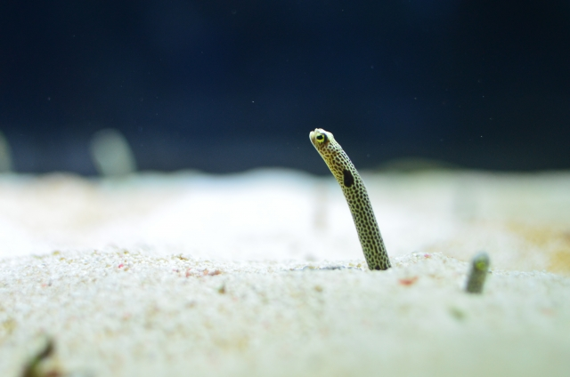

店長のつぶやき
ショップで何気なくカクレクマノミのいる水槽におもちゃの
イソギンチャクをいれたら、カクレは本物のイソギンチャクだと
思ったのか、中に入ってひらひらしてました。
ニセモノなのがちょっとかわいそうでしたけど可愛かったです。
個体差はあるのでどの子も同じことをするかは分かりませんが、
海水魚飼育を始めて間もない人は、試しに入れてみたらカクレが興味を持つかも？
カクレクマノミは、映画「ファインディングニモ」のモデルにもなったと言われている、知名度ナンバーワンの海水魚。アクアリウムショップや水族館でもおなじみの存在です。
オレンジのボディに真っ白のバンド模様、水中でひらひら泳ぐ姿はとても可愛らしく、飼育に関しても比較的容易で初心者向けといえます。
性格も穏やかな方なので、多種の魚との混泳にも適しています。
ただ同種、近縁主との混泳は、縄張り争いをする可能性が高いので注意が必要です。

 飼育のポイント紹介
飼育のポイント紹介ハワイ便のカクレクマノミは色もきれいでとても丈夫です！イソギンチャクにもすぐ馴染むし、今回来たコもサイズがちょうど良いので、ほかのカクレクマノミと一緒に水槽に入ればペアができるかも？

ショップで何気なくカクレクマノミのいる水槽におもちゃの
イソギンチャクをいれたら、カクレは本物のイソギンチャクだと
思ったのか、中に入ってひらひらしてました。
ニセモノなのがちょっとかわいそうでしたけど可愛かったです。
個体差はあるのでどの子も同じことをするかは分かりませんが、
海水魚飼育を始めて間もない人は、試しに入れてみたらカクレが興味を持つかも？
イソギンチャクと一緒にゆらゆら
クマノミといえば、イソギンチャクと共生する姿をよく目にします。 ショップでもイソギンチャクにわしゃわしゃしている姿はとてもかわ いいです♥ですが、イソギンチャクの飼育は、カクレクマノミと違って難易度は高め。
イソギンチャクは水質悪化に敏感で、もし死んでしまうと体が溶けて水槽内が大惨事に! ほかの魚にも影響を与える恐れがあるので、はじめはお魚単体での飼育をお勧めします。
十分魚も元気に暮らせるようになって、水質も安定した水槽が出来上がってからお迎えしてあげましょう。